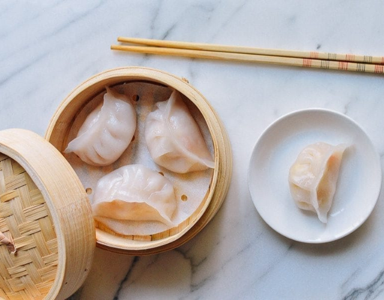
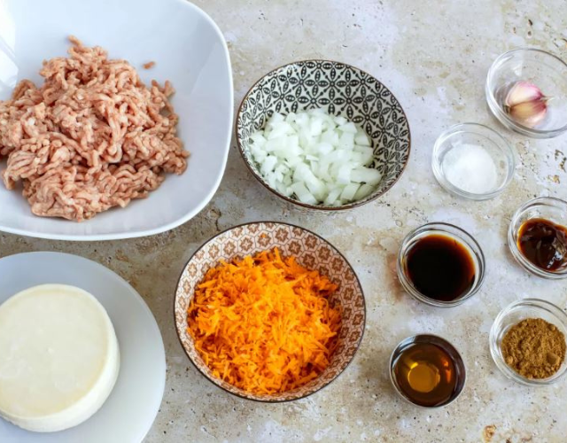

Receta
Dumplings


Tiempo de Preparación:
40 minutos
Tiempo de Cocción:
20 minutos
Tiempo Total:
1 hora
Ingredientes
- • 300g de carne de Cerdo picada
- • 1 paquete de Obleas para Dumplings (30 uni.)
- • 1 Cebolla de Verdeo
- • 1 Col China
- • 3 setas de Shiitake
- • 1 Zanahoria
- • 1 trozo de Jengibre y Ajo
- • 1 cucharada de Vino Shaoxing
- • Salsa de Soja y de Ostras al gusto
- • Aceite de Oliva
- • Aceite de Sésamo
- • 1 cucharada de polvo de 5 Especias Chinas
- • Sal y/o Pimienta al gusto
Preparación
- 1. Lavar y cortar las verduras.
- 2. Mezclar la carne picada con las verduras.
- 3. Incorporar el vino shaoxing, la salsa de soja y de ostras al gusto, el aceite de oliva, el aceite de sésamo, el polvo 5 especies, y la sal y/o pimienta al gusto. Dejar reposar por 30 minutos.
- 4. Agregar 1 cucharada de la mezcla en una oblea y mojar los bordes.
- 5. Cerrar en forma de empanada con pliegues en el borde.
- 6. Reservar y repetir hasta terminar el relleno.
- 7. Cocer los dumplings por 20 minutos en el cesto de cocción al vapor, con el papel de hornear agujereado.
- 8. Servir.